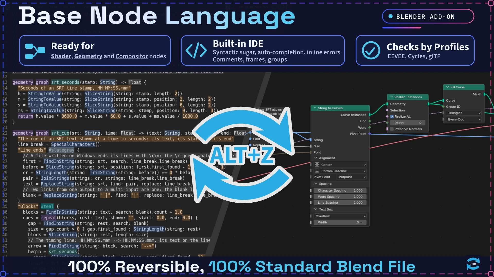
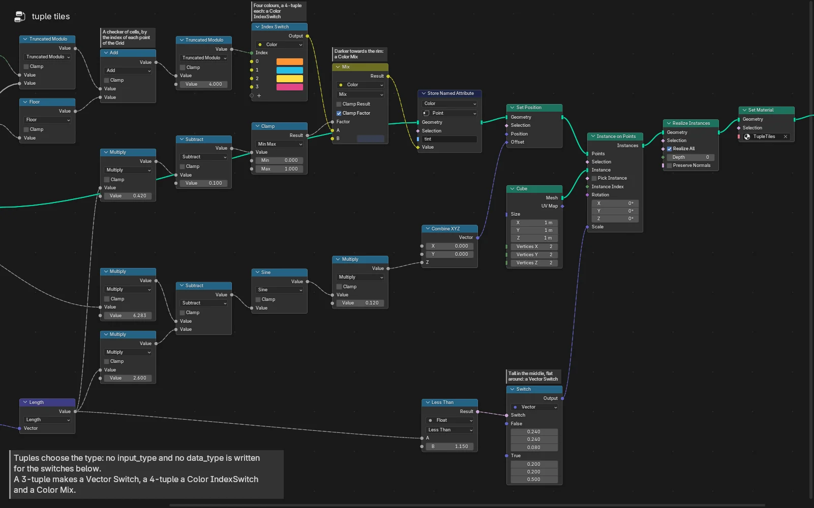
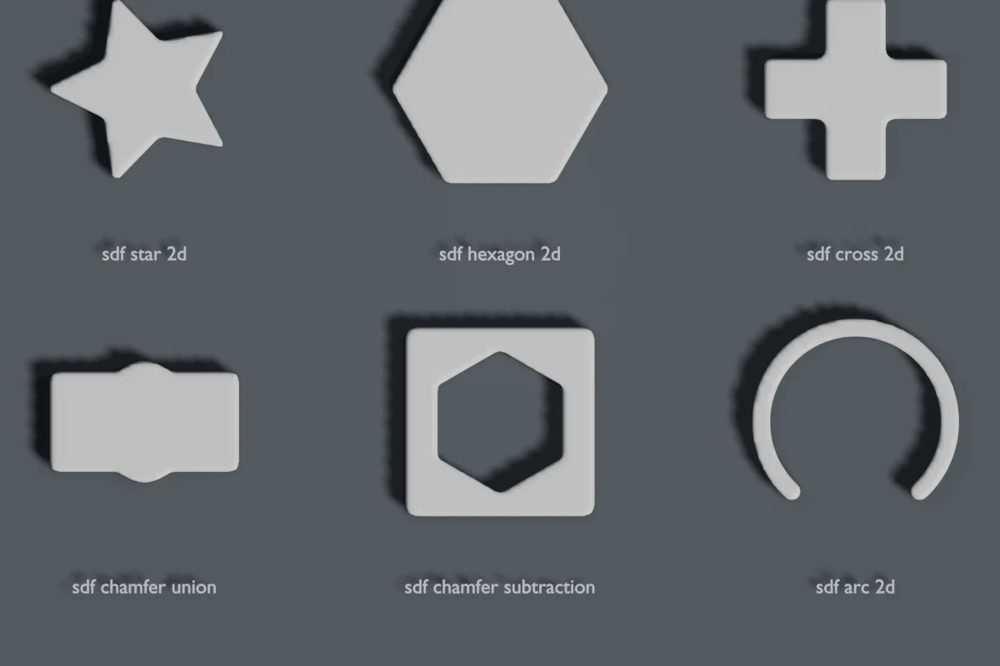
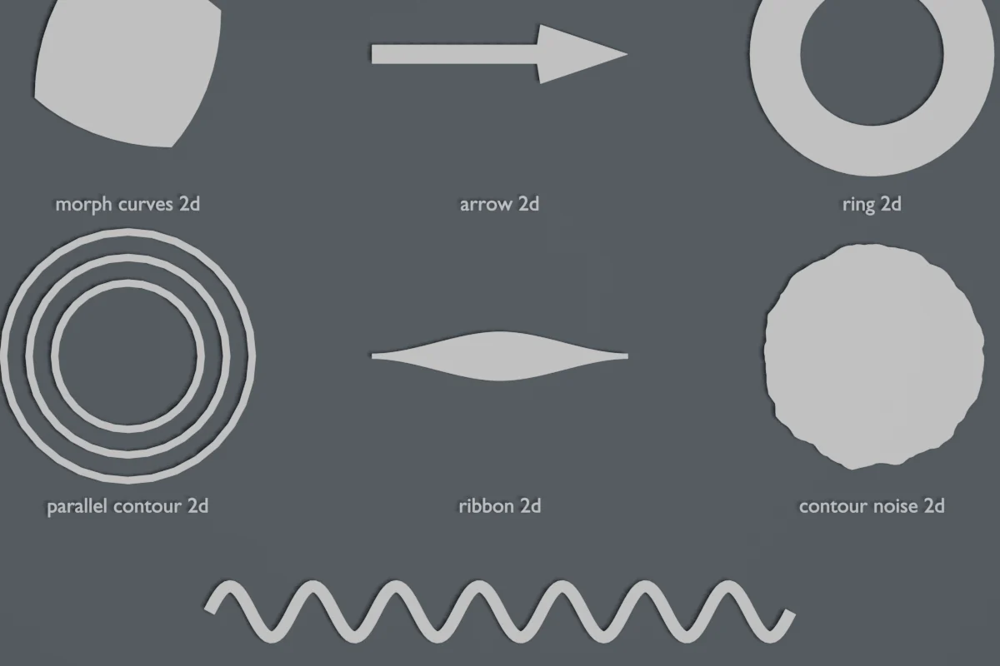
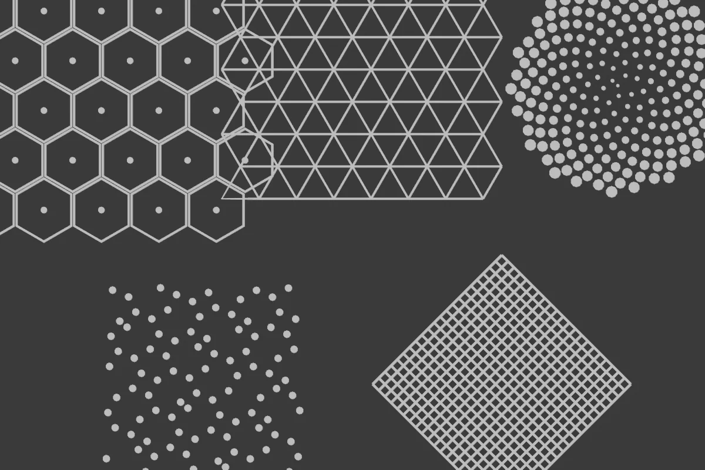
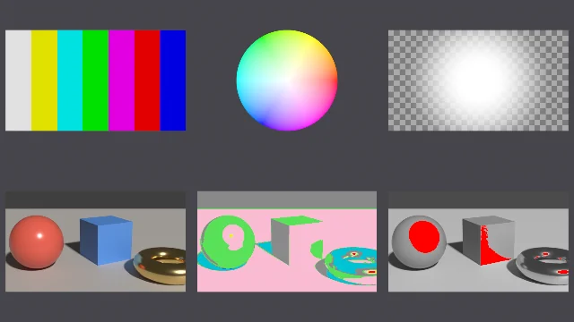
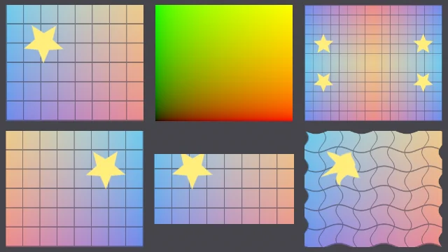
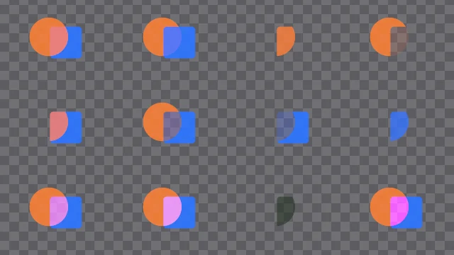
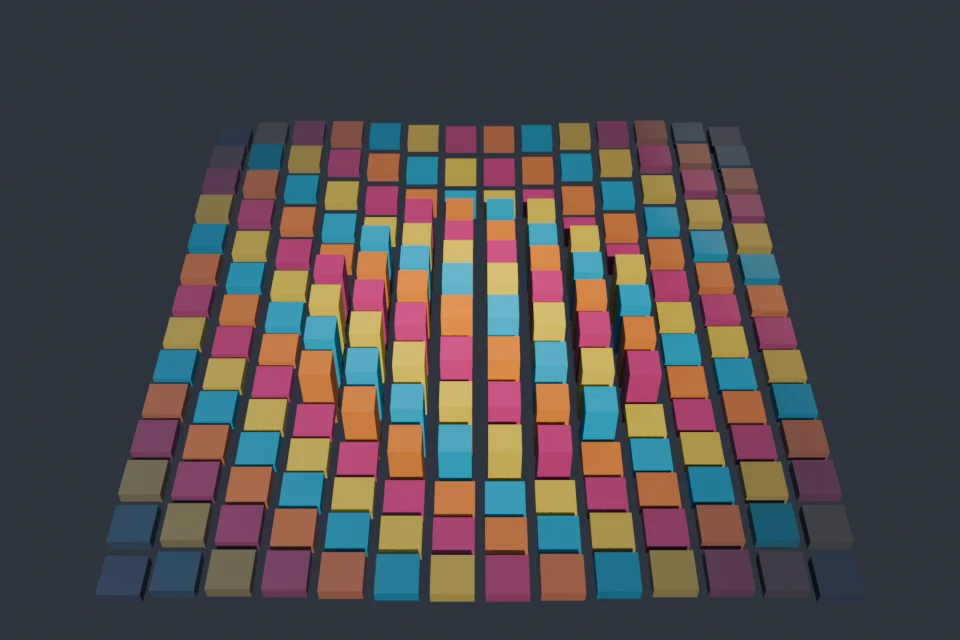

Products › Base Node
Free and open sourceBase Node

Node trees as text, and text as node trees
Base Node writes Geometry Nodes, Shader and Compositor node trees as text, and builds the text back into nodes. A tree becomes a .bn file of small functions. You can edit nodes as code, review them in diffs and share them as plain text.
The add-on is free, under the GPL 3.0 or later. Blender 5.2 LTS and later, tested on 5.2 LTS and 5.3.
chrono_hud.bn, an animated HUD built from the bundled modules sdf2d, curves2d, patterns2d and math.What you get
Nodes and text in the same area
- Alt+Z in the Node Editor shows the edited tree as
.bntext in the same area. Press it again to write the text into the tree and go back to the nodes. - While you type, the tree follows the text as soon as the text is valid. A text with errors changes nothing and lists its errors in the sidebar. Alt+P applies the text by hand when Apply while typing is off.
- The tree stays the only data. The text is a temporary view, removed when you go back to the nodes. An unchanged text leaves the tree and its layout as they were.
- Comments are kept in the tree: each
//comment is stored on the node of its statement and comes back the next time the text opens. The Node Editor draws them above their nodes. - Ctrl+Shift+C copies the edited tree as
.bntext, with the groups it calls, to paste in a forum post or a chat. Ctrl+Shift+V builds the.bntext of the clipboard in the current file. - Ctrl+Shift+A arranges the selected nodes, or the whole tree: links go left to right, in line with their sockets, and each frame keeps its nodes together. It works in every node editor.

tuple_tiles.bn built as Geometry Nodes, with its comments.Writing .bn
- Suggestions for nodes, sockets and the graphs of used modules with Ctrl+Space, in
.bntexts only. Ctrl+Alt+Space still maximizes the area. - Syntax highlighting, errors underlined as you type and listed in the sidebar, with a suggestion when one is close.
- Target checks: a text that declares its targets (
// @target blender gltf) has what they do not accept pointed out. Targets include thegltfvariant (the shader nodes a glTF export keeps) and, as experimental variants,eeveeandcycles. - Color Ramps and curves (RGB Curves, Float Curve, Vector Curves, Hue Correct) are written in the text, stop by stop and point by point.
- Format rewrites a text in the canonical layout and keeps its comments.
A standard library of eleven modules
use math reuses the graphs of another .bn file as node groups. A use looks in the texts of the .blend, next to the imported file, in a Module Folder you choose, then in the bundled library.
| Geometry and shading | math (shaping curves, waves, vectors, noise), sdf2d (2D signed distance fields), curves2d (resampling, curvature, path operations), patterns2d (tilings, grids, radial arrays), planar2d (planar maps: intersections, faces, region boundaries), fillet2d (fillets, chamfers and bevels of 2D corners) |
|---|---|
| Compositor | mask2d (masks from signed distance fields), merge (over, under, in, out, atop, screen, multiply), grade (grade, color correct, saturation, hue shift, soft clip, log to lin), stmap (STMap remapping), qc (test patterns and image checks: false color, clipping, NaN, zebra, difference) |






Import and drag and drop
- File › Import › Base Node (.bn) builds the graphs of one or more
.bnfiles. - Drop a
.bnfile on the 3D Viewport, the Node Editor or the Text Editor. A dialog shows its title, author and license and the choices it offers: install it as a library in the Module Folder, import its graphs, add an object with its example, or add its modifier to an object. Only files are read: a dropped link or text is ignored. - A shader graph also becomes a material of its name. A compositor graph becomes the scene's compositor when the scene has none. A material's own tree opens as text too (Alt+Z).
Written in .bn
Each of these is one .bn file, built by the add-on.
metaball_symphony.bn, from the bundled modulesdifferential_growth.bn, a simulationreaction_diffusion.bn, a simulation
tuple_tiles.bn, renderedNothing sent, little written
| Files | Reads the .bn files you import or drop and the modules they use. The only file written outside the .blend is a dropped file you choose to install as a library, copied into the Module Folder you set. |
|---|---|
| Clipboard | Written only by Copy as .bn, read only by Paste .bn. |
| Network | None. |
Get it
- In Blender: Edit › Preferences › Get Extensions › Repositories › + › Add Remote Repository, paste
https://basenode.ludopant.com/extensions/index.json, then install Base Node. A listing on Blender Extensions is on its way. - Free, under the GPL 3.0 or later. Source and issues: github.com/marcgardent/base-node-language.
- Language reference, tutorials and examples: basenode.ludopant.com.
- More libraries written in
.bn: BaseNode Packs.